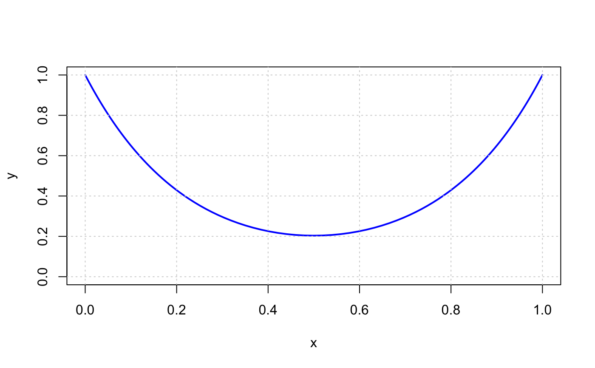

diff.RdThe lagged and iterated differences of a vector.
If x is length n, this function returns a length \(n-k\) vector of the \(k\)th order difference between the lagged terms.
diff(x) returns the vector of differences between adjacent elements in the vector, i.e. [x[2] - x[1], x[3] - x[2], ...].
diff(x,1,2) is the second-order differences vector, equivalently diff(diff(x)). diff(x,1,0) returns the vector x unchanged.
diff(x,2) returns the vector of differences [x[3] - x[1], x[4] - x[2], ...], equivalent to x[(1+lag):n] - x[1:(n-lag)].
# S4 method for Expression diff(x, lag = 1, differences = 1, ...)
| x | An Expression. |
|---|---|
| lag | An integer indicating which lag to use. |
| differences | An integer indicating the order of the difference. |
| ... | (Optional) Addition |
An Expression representing the kth order difference.
## Problem data m <- 101 L <- 2 h <- L/(m-1) ## Form objective and constraints x <- Variable(m) y <- Variable(m) obj <- sum(y) constr <- list(x[1] == 0, y[1] == 1, x[m] == 1, y[m] == 1, diff(x)^2 + diff(y)^2 <= h^2) ## Solve the catenary problem prob <- Problem(Minimize(obj), constr) result <- solve(prob)#> Problem #> Name : #> Objective sense : min #> Type : CONIC (conic optimization problem) #> Constraints : 704 #> Cones : 200 #> Scalar variables : 1002 #> Matrix variables : 0 #> Integer variables : 0 #> #> Optimizer started. #> Presolve started. #> Linear dependency checker started. #> Linear dependency checker terminated. #> Eliminator started. #> Freed constraints in eliminator : 194 #> Eliminator terminated. #> Eliminator started. #> Freed constraints in eliminator : 0 #> Eliminator terminated. #> Eliminator - tries : 2 time : 0.00 #> Lin. dep. - tries : 1 time : 0.00 #> Lin. dep. - number : 0 #> Presolve terminated. Time: 0.00 #> Problem #> Name : #> Objective sense : min #> Type : CONIC (conic optimization problem) #> Constraints : 704 #> Cones : 200 #> Scalar variables : 1002 #> Matrix variables : 0 #> Integer variables : 0 #> #> Optimizer - threads : 8 #> Optimizer - solved problem : the primal #> Optimizer - Constraints : 302 #> Optimizer - Cones : 200 #> Optimizer - Scalar variables : 700 conic : 600 #> Optimizer - Semi-definite variables: 0 scalarized : 0 #> Factor - setup time : 0.00 dense det. time : 0.00 #> Factor - ML order time : 0.00 GP order time : 0.00 #> Factor - nonzeros before factor : 902 after factor : 904 #> Factor - dense dim. : 0 flops : 8.51e+03 #> ITE PFEAS DFEAS GFEAS PRSTATUS POBJ DOBJ MU TIME #> 0 2.0e+00 4.8e+01 1.0e+00 0.00e+00 1.010000000e+02 1.010000000e+02 1.0e+00 0.01 #> 1 4.0e-01 9.7e+00 4.3e-01 -9.81e-01 -6.100654343e+02 -6.064605723e+02 2.0e-01 0.01 #> 2 8.4e-02 2.0e+00 1.1e-01 -5.81e-01 -1.090607132e+03 -1.084274859e+03 4.2e-02 0.01 #> 3 1.6e-02 3.9e-01 1.8e-02 7.41e-02 -8.445363673e+02 -8.396975530e+02 8.0e-03 0.01 #> 4 3.5e-03 8.4e-02 3.4e-03 1.94e-01 -4.941557141e+02 -4.903862780e+02 1.7e-03 0.01 #> 5 1.1e-03 2.8e-02 9.7e-04 2.58e-01 -3.088449812e+02 -3.060156330e+02 5.7e-04 0.01 #> 6 3.3e-04 8.0e-03 2.1e-04 4.31e-01 -1.711675209e+02 -1.695798876e+02 1.7e-04 0.01 #> 7 1.5e-04 3.6e-03 8.4e-05 3.52e-01 -1.077351878e+02 -1.064830507e+02 7.5e-05 0.01 #> 8 3.5e-05 8.5e-04 1.4e-05 4.18e-01 -3.157319914e+01 -3.090721808e+01 1.8e-05 0.01 #> 9 1.2e-05 3.0e-04 4.2e-06 3.60e-01 4.818589011e+00 5.293311872e+00 6.1e-06 0.01 #> 10 3.2e-06 7.8e-05 7.4e-07 5.52e-01 3.244801230e+01 3.265856391e+01 1.6e-06 0.01 #> 11 1.3e-06 3.2e-05 2.4e-07 5.47e-01 4.350329774e+01 4.362984250e+01 6.7e-07 0.01 #> 12 2.5e-07 6.2e-06 2.3e-08 7.52e-01 5.259417457e+01 5.262562447e+01 1.3e-07 0.01 #> 13 5.1e-08 1.2e-06 2.1e-09 8.93e-01 5.485985503e+01 5.486643320e+01 2.6e-08 0.01 #> 14 8.8e-10 2.1e-08 4.8e-12 9.79e-01 5.543098999e+01 5.543110701e+01 4.4e-10 0.01 #> 15 4.7e-12 1.1e-10 2.1e-15 9.99e-01 5.544114330e+01 5.544114395e+01 2.3e-12 0.01 #> 16 1.4e-12 1.5e-10 2.9e-17 1.00e+00 5.544119998e+01 5.544119999e+01 4.8e-14 0.01 #> Optimizer terminated. Time: 0.01 #> #> #> Interior-point solution summary #> Problem status : PRIMAL_AND_DUAL_FEASIBLE #> Solution status : OPTIMAL #> Primal. obj: 5.5441199980e+01 nrm: 1e+00 Viol. con: 7e-10 var: 0e+00 cones: 0e+00 #> Dual. obj: 5.5441199994e+01 nrm: 1e+03 Viol. con: 7e-13 var: 7e-08 cones: 0e+00 #> Optimizer summary #> Optimizer - time: 0.01 #> Interior-point - iterations : 16 time: 0.01 #> Basis identification - time: 0.00 #> Primal - iterations : 0 time: 0.00 #> Dual - iterations : 0 time: 0.00 #> Clean primal - iterations : 0 time: 0.00 #> Clean dual - iterations : 0 time: 0.00 #> Simplex - time: 0.00 #> Primal simplex - iterations : 0 time: 0.00 #> Dual simplex - iterations : 0 time: 0.00 #> Mixed integer - relaxations: 0 time: 0.00 #>## Plot and compare with ideal catenary xs <- result$getValue(x) ys <- result$getValue(y) plot(c(0, 1), c(0, 1), type = 'n', xlab = "x", ylab = "y")grid()